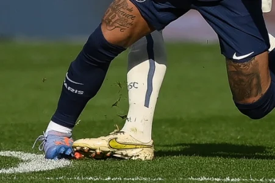

Neymar sofre lesão no ligamento do totrnozelo afirma psg
Após exames médicos realizados nesta terça-feira, o atacante brasileiro Neymar teve uma lesão ligamentar diagnosticada no tornozelo direito, informou o PSG. O craque se machucou no último domingo diante do Lille, chegando a deixar o campo de maca e chorando.
>
"Novos exames realizados hoje confirmam uma torção no tornozelo de Neymar Jr ,
com lesão ligamentar. Um novo exame será feito no início da próxima semana", diz o comunicado do clube francês.